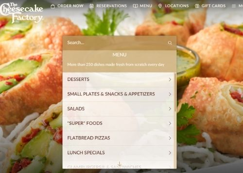

UX Case Study: Cheesecake Factory Online Menu
A more human-centered design of The Cheesecake Factory's online menu
Overview
This was a personal 1-week project in which the challenge was to redesign the layout of a website to better suit a particular audience's needs. The users I focused on were new customers not familiar with the Cheesecake Factory's online menu. Because the interface for the current online menu lacks sufficient information for new customers, I redesigned the menu section to include features to help users navigate the menu.
Role: User Researcher, UI Designer, Frontend Developer
Duration: 1 week
Tools used: Figma, HTML5, CSS3
UX Research
According to an article by the Nielson Norman Group on information architecture and flat vs. deep website hierarchies, content is more discoverable when not nested within many layers. The current online menu layout for The Cheesecake Factory contains numerous items nested under many different layers. This results in the user needing to click many times in order to reach important information on every item (such as images and food descriptions). Since the webpage is a horizontal space, the vertical list-structured menu creates visual conflict since it doesn't utilize the remaining space effectively.
UI Redesign
To implement a solution for an improved user experience, I used a grid layout instead of the list-based information architecture on the current website. This layout provides images and summarizes important information for each item without the user needing to scroll or click numerous times. This is especially important for new customers since they want to see what each dish looks like before ordering takeout. I also included a "Popular Right Now" section to give new users a sense of which menu items are frequently ordered by others, which gives them an idea of what they might want to order if they have trouble deciding. In addition, a I implemented a new sidebar containing a dropdown list of menu items for easy navigation. This sidebar allows users to look at each section of the menu without having to go back to a webpage dedicated for each section.
Redesign: Wireframe & Mockups


Key takeaways
- I learned the importance of how a specific target audience can drive design choices and the types of design features that are implemented
- I sharpened my wireframing skills in Figma
- I became more familiar with the iterative design process